ファイルの削除(DEL, ERASE)
ファイルを削除することができる DEL コマンドの使い方について解説します。
目次
DELコマンドの使い方
DEL コマンドを実行すると対象のファイルを削除することができます。書式は次の通りです。
DEL [/P] [/F] [/S] [/Q] [/A[[:]属性]] 名前
DLE コマンドの引数として削除する対象のファイル名を指定します。
なお ERASE コマンドを使っても同じ結果となります。
ERASE [/P] [/F] [/S] [/Q] [/A[[:]属性]] 名前
ファイルを削除する
カレントディレクトリにある note.txt を削除するには次のように実行します。
del note.txt
変更前のカレントディレクトリには次のようなファイルがありました。
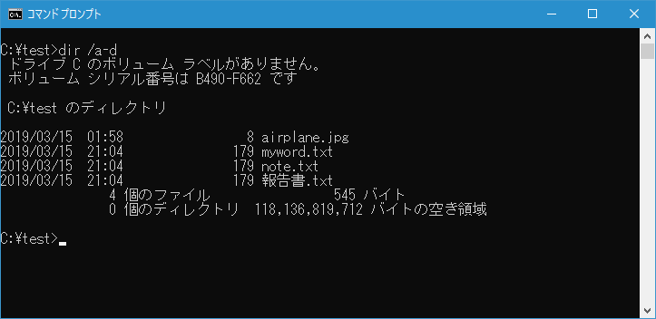
DEL コマンド実行後、 note.txt が削除されました。
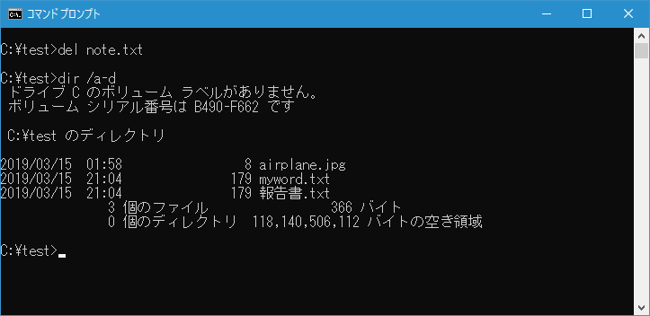
-- --
DEL コマンドの引数には複数のファイルを指定することもできます。複数のファイルを削除する場合は区切り文字として空白を使いファイル名を指定してください。例えばカレントディレクトリにある note.txt と 報告書.txt を削除するには次のように実行します。
del note.txt 報告書.txt
変更前のカレントディレクトリには次のようなファイルがありました。
DEL コマンド実行後、 note.txt と 報告書.txt が削除されました。
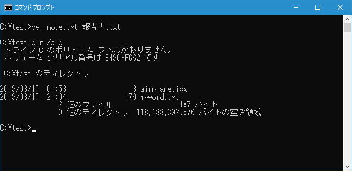
-- --
DEL コマンドを実行してファイルが削除されるときに確認メッセージを表示するには「/P」オプションを使用します。例えばカレントディレクトリにある note.txt を削除する時にメッセージを表示するには次のように実行します。
del /p note.txt
DEL コマンドを実行すると「xxx を削除しますか (Y/N)?」と確認メッセージが表示されます。
削除する場合には[y]キーを押したあとで[Enter]キーを押してくださいい。対象のファイルが削除されます。
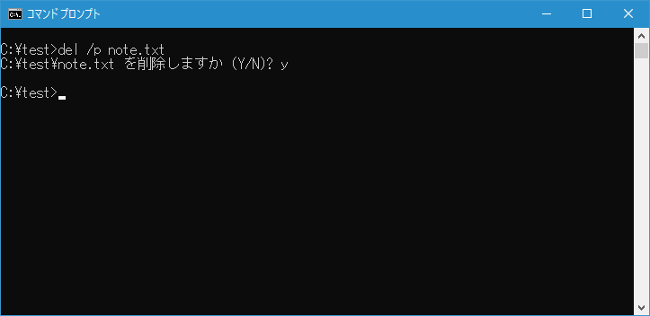
ワイルドカードを使って削除するファイルを指定する
DEL コマンドの引数にはワイルドカードを使用することもできます(ワイルドカードについては「ワイルドカードの使い方」を参照されてください)。例えばカレントディレクトリにある拡張子が .txt のファイルをすべて削除するには次のように実行します。
del *.txt
変更前のカレントディレクトリには次のようなファイルがありました。
DEL コマンド実行後、 note.txt と 報告書.txt が削除されました。
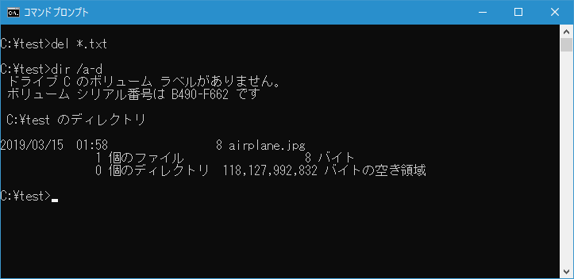
-- --
ワイルドカードを使いすべてのファイルを削除する場合には「/P」オプションを使用していなくても確認のためにメッセージが表示されます。「del *.*」や「del *」などです。例えばカレントディレクトリにあるすべてのファイルを削除する場合には次のように実行します。
del *.*
DEL コマンドを実行すると「*.*、よろしいですか (Y/N)?」と確認メッセージが表示されます。
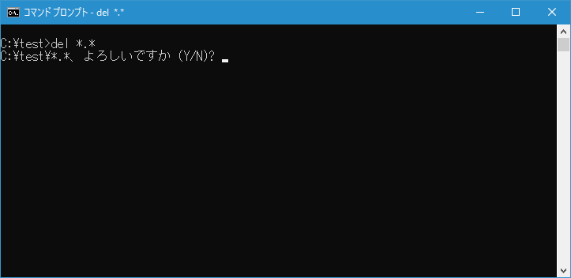
削除する場合には[y]キーを押したあとで[Enter]キーを押してくださいい。すべてのファイルが削除されます。
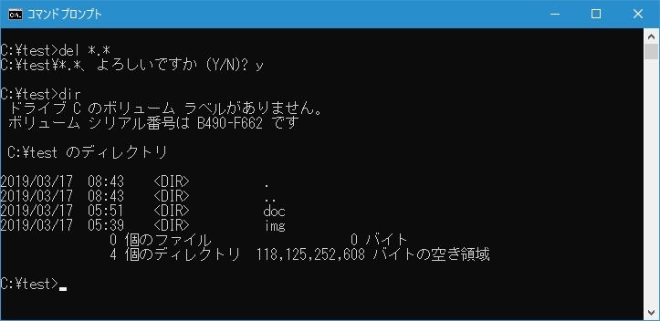
なおワイルドカードを使ってすべてのファイルを削除する場合に確認メッセージを表示しないようにするには「/Q」オプションを使用して次のように実行します。
del /q *.*
確認メッセージが表示されずに DEL コマンドを実行されてカレントディレクトリにあるすべてのファイルが削除されます。
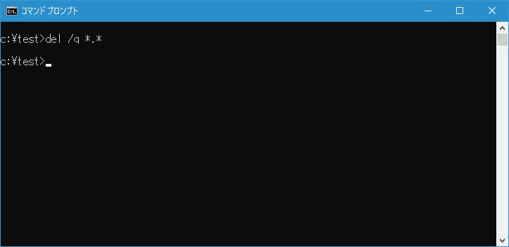
削除されたファイルは元に戻すことができません。誤動作を未然に防ぐためにも「/Q」オプションの使用はおすすめしません。
ディレクトリを指定してディレクトリに含まれるファイルを削除する
DEL コマンドの引数にディレクトリ名を指定した場合、ディレクトリに含まれるファイルがすべて削除されます。例えばカレントディレクトリの中にある doc ディレクトリに含まれるファイルをすべて削除するには次のように実行します。
del doc
これは次のように実行した場合と同じです。
del doc\*
ワイルドカードですべてのファイルを削除した場合と同じ扱いになるため、このDEL コマンドを実行すると「doc\*、よろしいですか (Y/N)?」と確認メッセージが表示されます。
削除する場合には[y]キーを押したあとで[Enter]キーを押してくださいい。指定したディレクトリに含まれるすべてのファイルが削除されます。
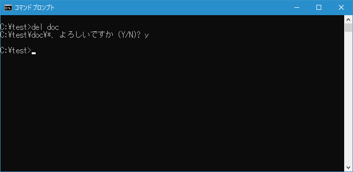
DEL コマンドを実行する前に TREE コマンドを使ってディレクトリに含まれるファイルを確認してみると次のようになっていました。(TREE コマンドについては「ディレクトリ構造をツリー形式で表示(TREE)」を参照されてください)。
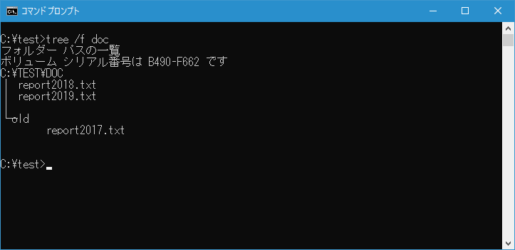
DEL コマンドを実行したあとで再び TREE コマンドを使って確認すると、対象のディレクトリに含まれるファイルはすべて削除されていますが、対象のディレクトリにあるサブディレクトリの中のファイルは削除されていませんでした。
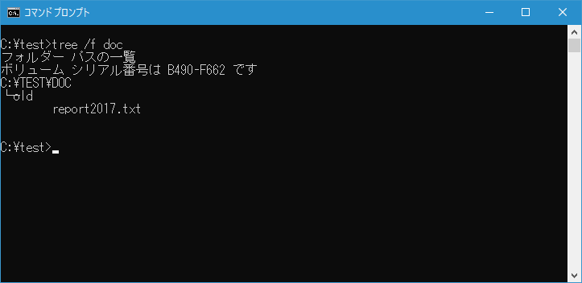
サブディレクトリの中のファイルも含めて削除する
DEL コマンドを実行する時にカレントディレクトリまたはディレクトリを指定した時、サブディレクトリの中のファイルも含めて削除するには「/S 」オプションを使用します。例えばカレントディレクトリとそのサブディレクトリを含めて拡張子が .bak のファイルをすべて削除するには次のように実行します。
del /s *.bak
DEL コマンド実行前に TREE コマンドを使って確認するとカレントディレクトリとサブディレクトリ内に拡張子が .bak のファイルは3つ存在しました。
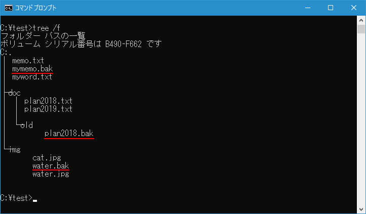
DEL コマンドを実行すると次のように表示されて先程の3つのファイルが削除されました。
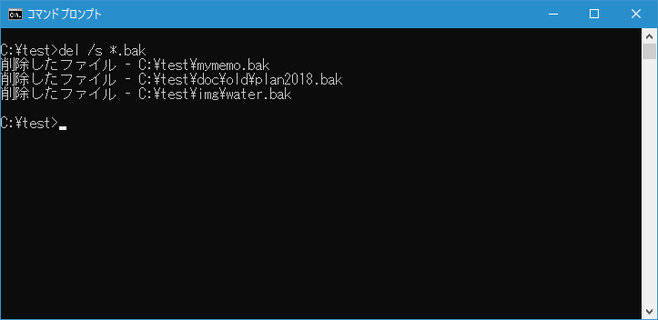
読み取り専用ファイルを強制的に削除する
読み取り専用属性が設定されたファイルを DEL コマンドで削除しようとすると「アクセスが拒否されました。」と表示されて削除することができません。
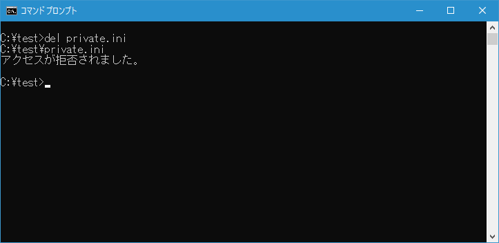
カレントディレクトリにある読み取り専用属性が設定された private.ini ファイルを DEL コマンドで削除するには「/F」オプションを使用して次のように実行します。
del /f private.ini
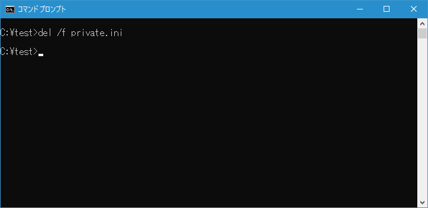
読み取り専用属性が設定されたファイルも DEL コマンドで削除することができました。
-- --
DEL コマンドを使ってファイルを削除する方法について解説しました。
( Written by Tatsuo Ikura )

著者 / TATSUO IKURA
初心者～中級者の方を対象としたプログラミング方法や開発環境の構築の解説を行うサイトの運営を行っています。